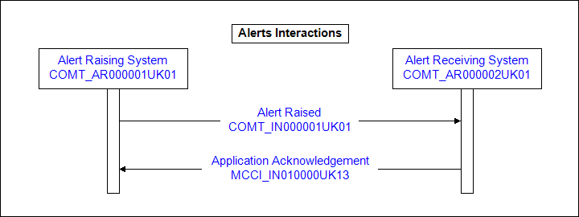

Contents
2 Storyboards
2.1 Message from Accredited System to Spine
2.2 Message from Spine to Accredited System
3 Application Roles
3.1 Alert Raiser - COMT_AR000001UK01
3.2 Alert Receiver - COMT_AR000002UK01
4 Trigger Events
4.1 Alert Raised - COMT_TE000001UK01
5 Interaction Diagrams
5.1 Alert Raised Interaction
6 Interactions
6.1 Alert Raised - COMT_IN000001UK01
7 Message Definitions
7.1 Alert - COMT_MT000001UK01
7.1.1 Example 1
Change History

1 Overview
This domain describes the TES Services Alerts messages that the Spine can send or receives from external Accredited Systems.
A key use for Alerts is in
the area of Information Governance (IG). IG Alerts are raised when an event
occurs that is deemed to compromise the confidentiality of patient data.
Such alerts shall be made available to authorised persons, such as Privacy
Officers, with a responsibility for governance of patient information.
2 Storyboards
2.1 Message from Accredited System to Spine
-
An Accredited System sends an alert to Spine
-
Spine processes the alert, i.e.
it uses the information in the alert and in its Spine Directory Service (SDS) to identify recipients who must be informed of the alert
Spine stores the alert
Spine sends an email notification to each recipient
2.2 Message from Spine to Accredited System
If an alert received by the Spine (see 2.1) is one of which an Accredited System must be made aware then:
-
Spine creates an HL7 message and sends it to the Accredited System (or Systems).
The original alert from an Accredited System will in effect be forwarded to a second Accredited System (or Systems)
3 Application Roles
The applications involved in the alert processes play specific roles. These, along with the interactions associated with each role, are identified below.
3.1 Alert Raiser - COMT_AR000001UK01
The Alert Raiser is the application role that originates the Alert
Alert Raiser Interactions.

3.2 Alert Receiver - COMT_AR000002UK01
The Alert Receiver is the application role that receives the Alert
Alert Receiver Interactions.
4 Trigger Events
4.1 Alert Raised - COMT_TE000001UK01
This event marks the point at which an alert needs to be raised by an accredited system, or by Spine.
| Structured Name | Alert Raised |
| Type | State-transition Based |
5 Interaction Diagrams
5.1 Alert Raised Interaction
Note - Application Acknowledgements are sent to originating systems for notification of successful or failure handling by the receiving application.

6 Interactions
6.1 Alert Raised - COMT_IN000001UK01
This interaction is used when an alert is communicated.
| Sending Role | Alert Raising System | COMT_AR000001UK01 |
| Receiving Role | Alert Receiving System | COMT_AR000002UK01 |
| Trigger Event | Alert Raised | COMT_TE000001UK01 |
| Transmission Wrapper | Send Message Payload | MCCI_MT010101UK12 |
| Control Act Wrapper | Control Act | MCAI_MT040101UK03 |
| Message Type | Alert | COMT_MT000001UK01 |

Receiver Responsibilities
| Reason | Interaction |
| Receiver finds an error in the alert message | MCCI_IN010000UK13 |
7 Message Definitions
7.1 Alert - COMT_MT000001UK01
A message containing the details of the Alert.


7.1.1 Example 1